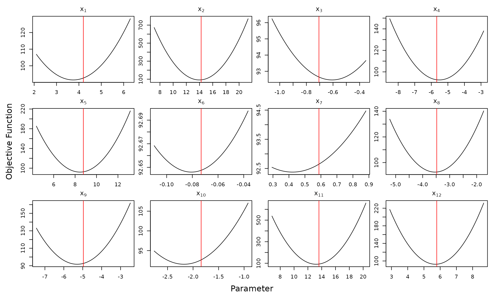
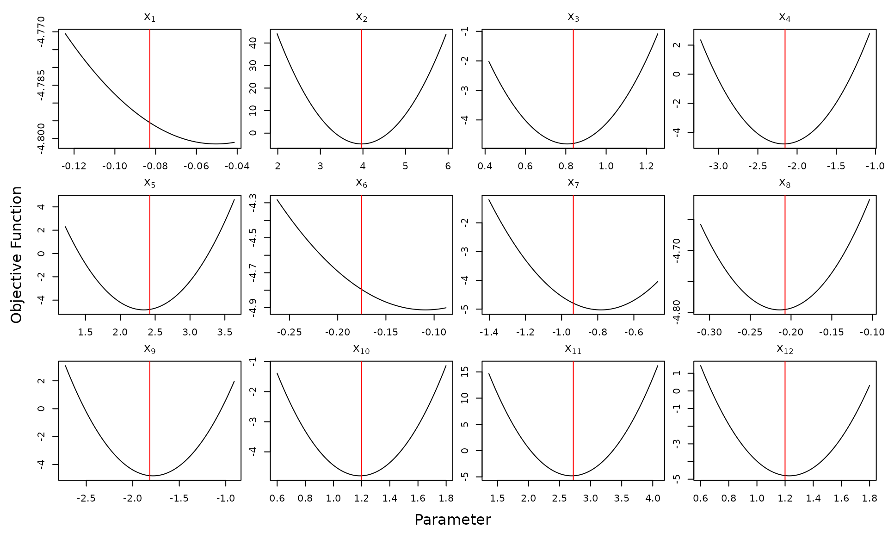

vignettes/optimCheck.Rmd
optimCheck.RmdThe optimCheck package provides a set of tools to check that output of an optimization algorithm is indeed at a local mode of the objective function. The tools include both visual and numerical checks, the latter serving to automate formalized unit tests with e.g., the R packages testthat or RUnit.
A brief overview of the package functionality is illustrated with the
following example. Let
denote a quadratic objective function
in
.
If
is a positive-definite matrix, then the unique minimum of
is
.
Let us now ignore this information and try to minimize
using R’s simplest built-in mode-finding routine,
provided by the R function
stats::optim().
In its simplest configuration, stats::optim() requires
only the objective function and a starting value
to initialize the mode-finding procedure. Let’s consider a difficult
setting for stats::optim(), with a relatively large
and a starting value
which is far from the optimal value
.
d <- 12 # dimension of optimization problem
# create the objective function: Q(x) = x'Ax - 2b'x
A <- crossprod(matrix(rnorm(d^2), d, d)) # positive definite matrix
b <- rnorm(d)
objfun <- function(x) crossprod(x, A %*% x)[1] - 2 * crossprod(b, x)[1]
xhat <- solve(A, b) # analytic solution
# numerical mode-finding using optim
xfit <- optim(fn = objfun, # objective function
par = xhat * 5, # initial value is far from the solution
control = list(maxit = 1e5)) # very large max. number of iterationsoptim_proj()
Like most solvers, stats::optim() utilizes various
criteria to determine whether its algorithm has converged, which can be
assess with the following command:
# any value other than 0 means optim failed to converge
xfit$convergence ## [1] 0Here stats::optim() reports that its algorithm has
converged. Now let’s check this visually with
optimCheck using projection plots. That is,
let
denote the potential optimum of
.
Then for each
,
we plot
In other words, projection plot
varies only
,
while holding all other elements of
fixed at the value of the potential solution
.
These plots are produced with the optimCheck function
optim_proj():
require(optimCheck) # load package## Loading required package: optimCheck
# projection plots
xnames <- parse(text = paste0("x[", 1:d, "]")) # variable names
oproj <- optim_proj(fun = objfun, # objective function
xsol = xfit$par, # potential solution
maximize = FALSE, # indicates that a local minimum is sought
xrng = .5, # range of projection plot: x_i +/- .5*|x_i|
xnames = xnames)
In each of the projection plots, the potential solution
is plotted in red. The xrng argument to
optim_proj() specifies the plotting range. Among various
ways of doing this, perhaps the simplest is a single scalar value
indicating that each plot should span
xrng
.
Thus we can see from these plots that stats::optim() was
sometimes up to 10% away from the local mode of the projection
plots.
Projection plots are a powerful method of assessing the convergence
of mode-finding routines to a local mode. While great for interactive
testing, plots are not well-suited to automated unit testing as part of
an R package development process. To this end,
optimCheck provides a means of quantifying the result
of a call to optim_proj(). Indeed, a call to
optim_proj() returns an object of class
optproj with the following elements:
## xsol ysol maximize xproj yproj
## [1,] 12 1 1 100 100
## [2,] 1 1 1 12 12As described in the function documentation, xproj and
yproj are matrices of which each column contains the
-axis
and
-axis
coordinates of the points contained in each projection plot. The
summary() method for optproj objects coverts
these to absolute and relative errors in both the potential solution and
the objective function. The print() method conveniently
displays these results:
oproj # same print method as summary(oproj)##
## 'optim_proj' check on 12-variable minimization problem.
##
## Top 5 relative errors in potential solution:
##
## xsol D=xopt-xsol R=D/|xsol|
## x7 0.58760 -0.163200 -0.2778
## x10 -1.84200 -0.344100 -0.1869
## x3 -0.70570 0.096230 0.1364
## x1 4.19900 -0.445300 -0.1061
## x6 -0.07315 -0.007758 -0.1061The documentation for summary.optproj() describes the
various calculations it provides. Perhaps the most useful of these are
the elementwise absolute and relative differences between the potential
solution
and
,
the vector of optimal 1D solutions in each projection plot. For
convenience, these can be extracted with the diff()
method:
diff(oproj) # equivalent to summary(oproj)$xdiff## abs rel
## x1 -0.445321028 -0.10606061
## x2 -0.215858067 -0.01515152
## x3 0.096231561 0.13636364
## x4 0.143242614 0.02525253
## x5 -0.310081433 -0.03535354
## x6 -0.007758386 -0.10606061
## x7 -0.163226011 -0.27777778
## x8 -0.052715576 -0.01515152
## x9 -0.326153891 -0.06565657
## x10 -0.344134419 -0.18686869
## x11 -0.343453576 -0.02525253
## x12 -0.087700503 -0.01515152
# here's exactly what these are
xsol <- summary(oproj)$xsol # candidate solution
xopt <- summary(oproj)$xopt # optimal solution in each projection plot
xdiff <- cbind(abs = xopt-xsol, rel = (xopt-xsol)/abs(xsol))
range(xdiff - diff(oproj))## [1] 0 0Thus it is proposed that a combination of summary() and
diff() methods for projection plots can be useful for
constructing automated unit tests. In this case, plotting itself can be
disabled by passing optim_proj() the argument
plot = FALSE. See the optimCheck/tests folder
for testthat examples featuring:
stats::glm() function).quantreg::rq() function in quantreg)mclust::emEEE()
in mclust).You can run these tests with the command
testthat::test_package("optimCheck", reporter = "progress")optim_refit(): A Numerical Alternative to Projection
Plots
There are some situations in which numerical quantification of projection plots leaves to be desired:
Generating all projection plots requires
N = 2 * npts * length(xsol) evaluations of the objective
function (where the default value is npts = 100), which can
belabor the process of automated unit testing. A different test for
mode-finding routines is to recalculate the optimal solution with an
“very good” starting point: the current potential solution. This is the
so-called “refine optizimation” – or
refit – strategy.
The optim_refit() function refines the optimization with
a call to R’s built-in general-purpose optimizer: the
function stats::optim(). In particular, it selects the
default Nelder-Mead simplex method with a simplified parameter
interface. As seen in the unit tests above, the refit
checks are 2-3 times faster than their projection plot counterparts.
Consider now the example of refining the original
stats::optim() solution to the quadratic objective
function:
orefit <- optim_refit(fun = objfun, # objective function
xsol = xfit$par, # potential solution
maximize = FALSE) # indicates that a local minimum is sought## Warning in optim_refit(fun = objfun, xsol = xfit$par, maximize = FALSE):
## Iteration limit maxit has been reached.
summary(orefit) # same print method as orefit##
## 'optim_refit' check on 12-variable minimization problem.
##
## Top 5 relative errors in potential solution:
##
## xsol D=xopt-xsol R=D/|xsol|
## [1,] 0.58760 -1.5230 -2.592
## [2,] -0.70570 1.5430 2.186
## [3,] -1.84200 3.0410 1.651
## [4,] -0.07315 -0.1021 -1.396
## [5,] 4.19900 -4.2820 -1.020Thus we can see that the first and second run of
stats::optim() are quite different.
Of course, this does not mean that the refit solution produced by
stats::optim() is a local mode:
# projection plots with refined solution
optim_proj(xsol = orefit$xopt, fun = objfun,
xrng = .5, maximize = FALSE)
Indeed, the default stats::optim() method is only accurate
when initialized close to the optimal solution. Therefore, one may wish
to run the refit test with a different optimizer. This can be done
externally to optim_refit, prior to passing the refit
solution to the function via its argument xopt. This is
illustrated below using stats::optim()’s gradient-based
quasi-Newton method:
# gradient of the objective function
objgrad <- function(x) 2 * drop(A %*% x - b)
# mode-finding using quasi-Newton method
xfit2 <- optim(fn = objfun, # objective function
gr = objgrad, # gradient
par = xfit$par, # initial value (first optim fit)
method = "BFGS")
# external refit test with optimizer of choice
orefit2 <- optim_refit(fun = objfun,
xsol = xfit$par, # initial value (first optim fit)
xopt = xfit2$par, # refit value (2nd fit with quasi-Newton method
maximize = FALSE)
# project plot test on refit solution
optim_proj(xsol = orefit2$xopt, fun = objfun,
xrng = .5, maximize = FALSE, plot = FALSE)##
## 'optim_proj' check on 12-variable minimization problem.
##
## Top 5 relative errors in potential solution:
##
## xsol D=xopt-xsol R=D/|xsol|
## x1 0.5008 -0.002530 -0.005051
## x2 3.0600 -0.015450 -0.005051
## x3 -0.3098 0.001564 0.005051
## x4 -1.4320 0.007233 0.005051
## x5 1.5770 0.007967 0.005051Many constrained statistical optimization problems, seek a “sparse”
solution, i.e., one for which some of the elements of the optimal
solution are equal to zero. In such cases, the relative difference
between potential and optimal solution is an unreliable metric. A
working proposal is to flag these “true zeros” in
optim_proj() and optim_refit(), so as to add a
1 to the relative difference denominators. Other suggestions on this and
optimCheck in general are welcome.